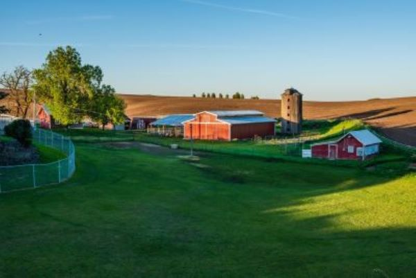

About Us
Welcome to our farm shop website, where you can find all the information that you need about our products.
The farm shop has a wide range of fresh product and products, from jams and preserves to eggs and bacon.
We have free-range eggs that are laid by the chickens on our farm.
The Abington Farm Shop And Cafe. This is where everything began. Our Edinburgh Cafe is the place where our family created and perfected the authentic Scottish experience that we are famous for today.
The Farm Shop has a wide range of fresh produce and deli products, from jams and preserves to free range eggs, and local oragnic and artisan products.Our cafe menu is packed full of traditional dishes, we have secured our place as the favourite, family-friendly farm shop and cafe in the Edinburgh community.
Our menus and setting provide the perfect atmosphere for any occasion; from family meals, to children parties, to schools and groups activities and more. At Abington Farm Edinburgh, our friendly staff and stunning scenery ensure you’ll feel like one of the family every time you visit.
Choose from award winning pies with fillings such as: apricot or blackberry; hand-made chocolates; local honey and marmalade; homemade breads and cakes; locally sourced fruit juices, wines, beers and ciders.
We also sell fresh vegetables grown in our garden!
Shop.
We also have a small café attached to the farm shop so people can enjoy their purchases immediately.
Some of the most popular items in a farm shop are:
• fresh eggs
• milk
• yogurt
• cheese
• bread
• cakes
Abington Farm Shop @Home
Abington Farm Shop @Home is a brand new fresh food experience that allows you to enjoy your favourite heaalthy dishes from the comfort of your own home.
Abington Farm Shop @Home dining allows you to preorder freshly prepared Ingredients for a chilled delivery to your home to be eaten at your own convenience – taking the hassle out of cooking.
Staying at home doesn’t need to mean cooking for yourself. Take a look at our Abington Cafe @ Home website and preorder today!
Activities
The farm park has many activities for people to do.
Some of these activities are hayrides, pumpkin picking, and a corn maze.
You can also:
- visit the animals and see how they live in their natural habitat
- play with farm tools, such as a pitch fork or shovel
- pick your own produce from the garden to take home with you!
- Abington Farm, Biggar
- Edinburgh
- ML12 6RH
- Tel : 01864 502501
- email: info@Abingtonfarmshop.com
Abington Cafe, Abington Farm, Biggar
Situated between Edinburgh and Carlisle, has a vistoer attraction that includes a shop selling local produce and plants, small petting zoo, cafe and play area, with park and walks, Abington Cafe is truly the home of authentic dining in the heart of Scotland. Following the same ethos as our original farm, we serve delicious, traditional food from breakfast through to lunch and afternoon tea, 7 days a week.
The Scottish Dinning Experience
Our Abington Farm Cafe is always filled with a buzzing atmosphere, happy diners and the smell of beautiful, authentic food. We promise that no matter what time of the day you dine with us, we’ll always leave you wanting more from the Red Cafe
- Monday - 8:00-17:00
- Tuesday - 8:00-17:00
- Wednesday - 8:00-17:00
- Thursday - 8:00-17:00
- Friday - 8:00-17:00
- Saturday - 8:00-17:00
- Sunday - 9:00-16:30